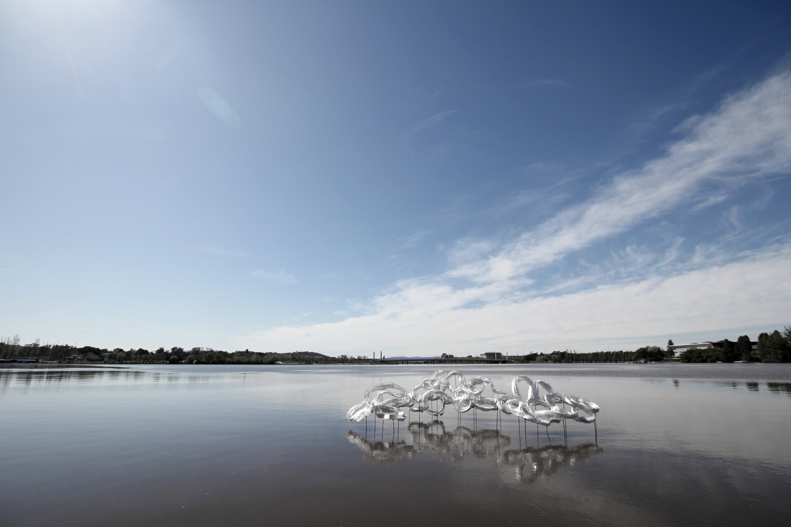

| Monday - Tuesday | Wednesday - Friday | Saturday - Sunday |
|---|---|---|
| 6:00 am - 12:00 am | 5:00 am - 02:00 am | 8:00 am - 11:00 pmn |
| Drama | Art & Design Festival | Queen Victoria Festival | Easter Festival | Crown History | VIP Event |
|---|---|---|---|---|---|
| 55 | 75 | 55 | 125 | 55 | 65 |
Below you will find videos of the contour 556 (Localjinni 2020 and Symposium), from which visitors of all ages come to appreciate the art.
In the second video, we see how Canberra's Museum and Gallery and contour 556 collaborated on a symposium reviewing past events in Canberra (and Civic Square) and looking to the future.
Below are photos from different artists which are not only beautiful and breathtaking but also have a lot of meaning behind them. Take a moment to contemplate the meaning behind that photograph.
Mariana Del Castillo / Mark Booth


Katty Mutton / Restu Ratnaningtyas

Sian Watson / Localjinni
Hannah Quinlivan / Glen Hayward


Localjinni